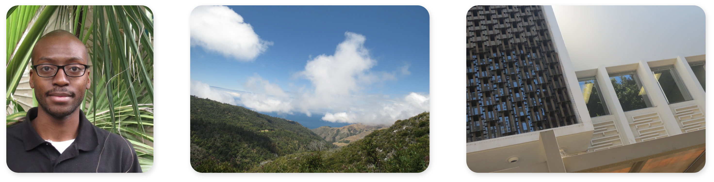

About


Many people love to talk, but Noah Nlandu enjoys listening. This trait paired with his interest in art is the reason he is a graphic designer. Noah creates brands solutions for online platforms, and designs responsive user interfaces and experiences. He loves when his research leads to branding that matches the personal style of the client, creating cohesion is Noah’s favorite part of his work. He is adaptable to any environment, patient, imaginative, and he applies his talents to everything he encounters.
Noah loves finding solutions to problems. Many times this comes in the form of balancing design with function; in other words giving his audience something pleasing to look at while also organizing important information. He enjoys the challenge of making visually interesting designs that serve a functional purpose.
When not working, Noah is usually skateboarding with friends, shooting photos, or spending time with family. Aside from that, he’s always cooking something new at home, and because he’s always searching for new experiences, he makes plans to visit new places locally and abroad as often as possible.